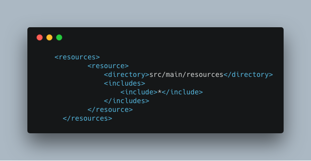
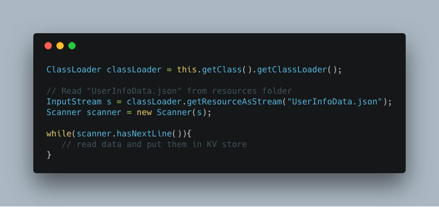

Read Static file in Apache Samza

Scenario
Apache Samza is a stream processing framework developed by Linkedin. It allows we to build stateful applications that process data in real-time and it could read data from Apache Kafka smoothly. It has handful of examples on how to read stream data from Kafka topic. However, it did not include any working examples for Apache Samza to consume static data and stream data at the same time in stream processing. In real life, we need to consume static data firstly and then make decisions based on static data and stream data. In Apache Spark streaming, it is possible to do this. In Apache Samza, it is not supported correctly.
Attempt with official API
In the documentation, it provides the option to read data from HDFS. It is said:
When all partitions being processed by the task are at the end of stream (i.e., EOF has been reached for all files), the Samza job exits automatically
This warning is only for one HDFS consumer, if we used a Kafka and HDFS consumer, it would not exit.
One thing it is also mentioned in the documentation:
Samza supports Avro natively, and it’s easy to extend to other serialization formats. To support non-Avro input formats, you can implement the SingleFileHdfsReader interface.
If I wanted to read JSON file, I need to implement that interface. However, it did not provide any examples online, and I did not continue trying this method.
Hacker way 1
One way to do this is to send static data as a stream. We do the following steps:
- Create a
data-streamin Kafka cluster. - Write Data producer code to read data in the static file line by line.
- Send JSON format data to all partitions in Kafka cluster with data-stream.
- Wait for Samza consume all data in the Kafka topic.
- Begin to send stream data.
If we have multiple partitions in Kafka, we need to send data to all partitions if the static data is needed in all partitions. The reason is in Apache Samza, and it will start a Samza job in each partition. The KeyValueStore is not shared with different partitions. It is easy to get NullPointerException if we did not send to all partitions.
Wait after sending data is also very important. The reason is in the documentation
If a job is consuming messages from more than one input stream, and all input streams have messages available, messages are processed in a round robin fashion by default.
Therefore, if we did not wait after sending static data in the topic, we would also get NullPointerException because Consumer did not read that data and save them in KeyValueStore.
Hacker way 2
Another way is to just put data in Java Maven Project resource folder. In the Samza Consumer code initialization step, we could read data from the resource folder and save them in KeyValueStore. We need to do the following things.
- Create a new folder under
src/main/resourcesand put static data here. Add the following code snippets in
pom.xml. In the source code, put the following code to read data. 
This way is more natural than the previous method.
Conclusion
In the beginning, I thought it should support in the Apache Samza. However, after researching, it is not supported in the official documentation, and it seemed not a common use case. Then I used some hacker ways to avoid using official HDFS consumer. I spent lots of time to debug and make the first hacking method work. My experience taught me I should read the documentation carefully before writing any code. The second way is much easier and could achieve the same result as the first way.